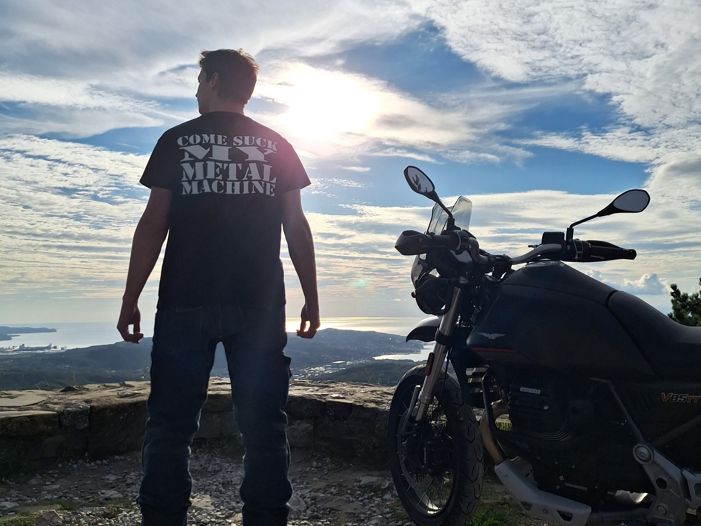
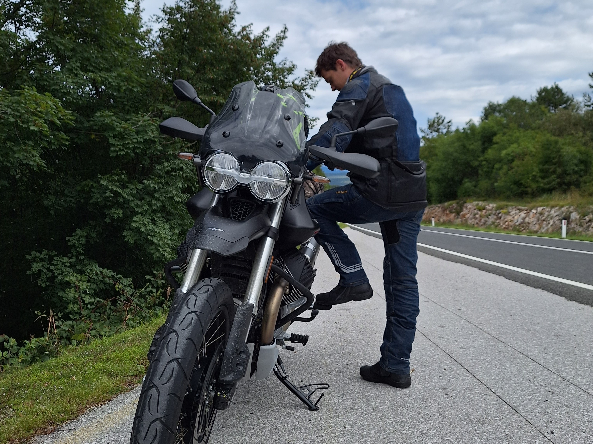
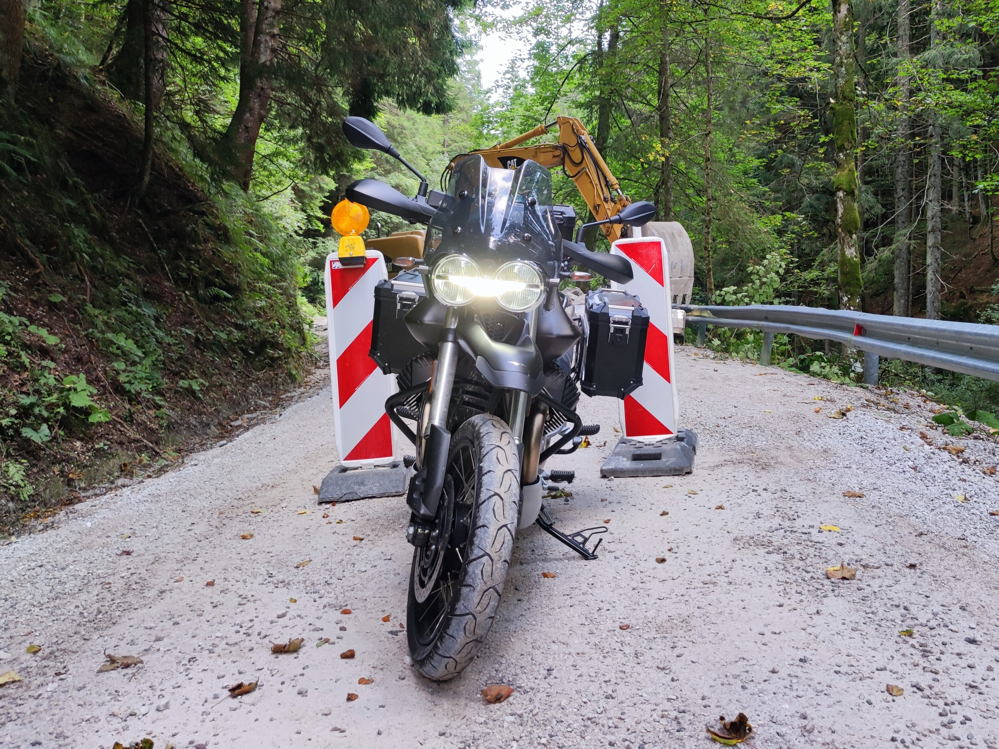
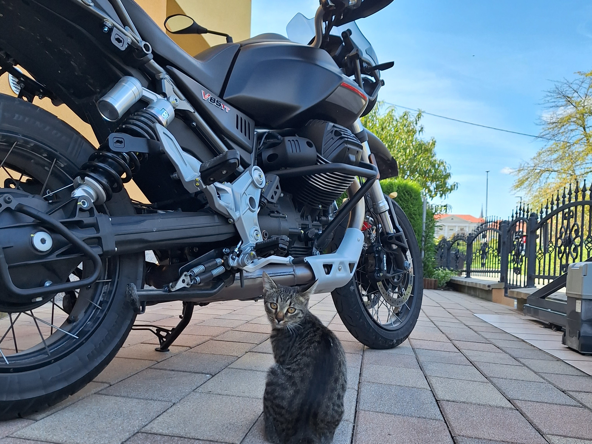

The Founding and Early Years
Moto Guzzi was founded in Mandello del Lario, Italy, by three friends: Carlo Guzzi, Giorgio Parodi, and Giovanni Ravelli. The company was born in the aftermath of World War I, a time when innovation and adventure were in the air. Their first motorcycle, the "Normale," was a 500cc, single-cylinder bike that set the foundation for the brand's future success.

The Eagle Emblem
Moto Guzzi's iconic eagle emblem has become synonymous with the brand. The story goes that Giovanni Ravelli, one of the co-founders and a fighter pilot in the Italian Air Force during World War I, perished in a plane crash. To honor his memory, the company adopted the eagle as its emblem. It's a symbol of freedom, power, and the spirit of the open road.

Iconic Models
Over the years, Moto Guzzi has produced several iconic models. The V7, introduced in the 1960s, is one of their most recognizable and enduring designs. It's a bike that beautifully combines style, performance, and innovation. The Le Mans, California, and the more recent V9 and V85 TT are other examples of beloved models that have left an indelible mark on the motorcycle world.

Innovations and Racing Success
Throughout its history, Moto Guzzi has been at the forefront of motorcycle innovation. In 1928, they introduced the GT Norge, one of the world's first motorcycles with a wind tunnel-designed fairing, ideal for long-distance touring. This innovation earned the GT Norge the prestigious "Norge" name in honor of Giuseppe Guzzi's transarctic flight to the Norwegian North Cape.
Moto Guzzi has also enjoyed a rich history in motorcycle racing. They have secured numerous victories in prestigious events such as the Isle of Man TT and the Targa Florio. Their success on the track helped solidify their reputation as a formidable force in the world of motorsports.

In Conclusion
Moto Guzzi's motorcycle heritage is a testament to the enduring appeal of Italian craftsmanship and innovation. Their journey from a small workshop in Mandello del Lario to a global icon is a remarkable story of passion and dedication. Whether you're drawn to their classic designs or their modern offerings, Moto Guzzi is a brand that continues to captivate riders with its timeless spirit and commitment to excellence.
As you consider your next motorcycle adventure, why not explore the open road on a Moto Guzzi? The wind in your face and the roar of the engine beneath you are experiences that connect you to the storied heritage of this legendary brand.